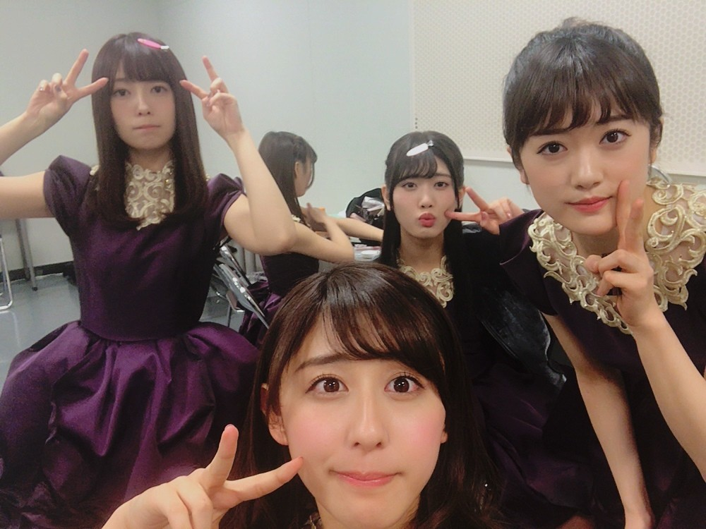
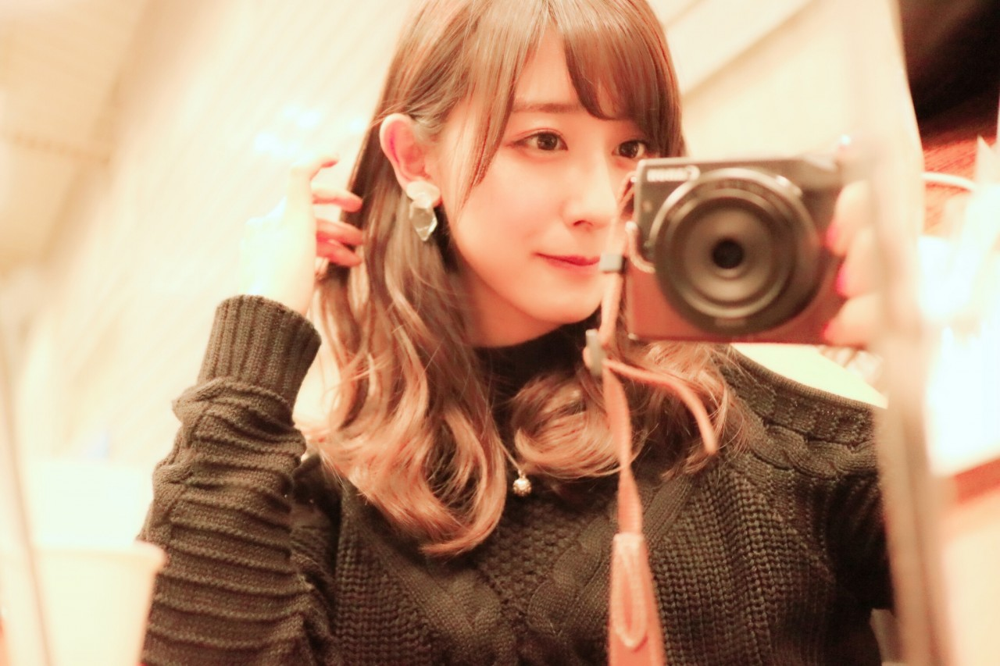
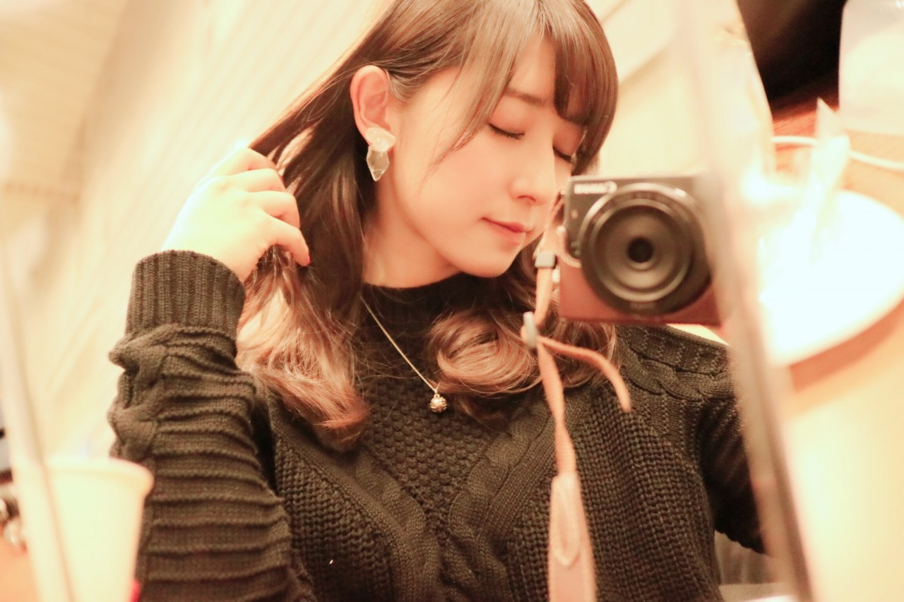

| 2017/02 28 Tue | 二月ラスト |

みんなで2( ¨̮ )
2月最終日だなんて、早いな〜
今年もあっという間に過ぎていきそうな気がする。
大切に過ごそう。
ライブのオフショット。
紅白で着たこの衣装もライブで着られたの！
またこの衣装が着られて嬉しかった〜
！ChihAnswer！
 かいとなつさん
かいとなつさん
・好きな給食何でしたー？
→さきたまライスボール。笑
埼玉民なら知ってるはず！！
ご飯ではなくて、米粉パンなの。
中に砂糖が入っていて
甘くてとっても美味しい☺︎
あ〜また食べたくなってきた！
お取り寄せできるのかな笑
キジバトさん
・バスラで、ちーちゃん的に1番盛り上がった曲は何ですか？
→ななみんとまいやんの孤独兄弟！
2人の存在感と格好良さが
凄かったのもあるし、
映像の2人の綺麗さに
目奪われました(°_°)！
もう見れないと思うと寂しい...
ヒロヤさん
・今年の初めに募集した新しいブログのコーナーはある程度候補は決まったのかな？
→遅くなってしまって御免なさい。
決まりました！！
題して、☺︎ChihaBoom☺︎！
私が好きなものや好きな事、
気になる事などについて
只管語るコーナー。
不定期で行いたいと思います。
皆さん沢山の意見ありがとうございました！
そして、お楽しみに(﹡ˆ ˆ﹡)
紫帆さん
・ちーちゃんにも今までに最低顔と最高顔はありますか？
→もちろんありますよ！！
むしろ最低顔の方が断然多いです！！
この回の乃木中と、
オススメ商品の紹介の乃木中、
どちらも出る予定だったのですが
定期試験の時間と丸かぶりで
出演出来ず...なので
私が思う最低顔最高顔も
皆さんには秘密ですね笑
つもちゃんさん
・ちーちゃんは音楽を聴くとき、イヤホン派？それともヘッドフォン派？
→私は断然イヤホン派！
持ち運びが楽なのが1番かな。
でもヘッドフォン可愛いよね〜
ヘッドフォンしてる女の子に憧れる！
最近イヤホンなのか、
スマホと繋ぐアダプターなのか、
どちらなのか分からないけど
調子が悪くてヤキモキするの...
オススメイヤホンありますか？
ショコラニストさん
・最近見たいと思ってる映画はある？
→ララランドは絶対見たい！
あとはちまとさゆが出ていた舞台
帝一の國の映画と、
ミニオンズスタッフが送るSINGかな〜
今期豊作な気がする...！
楽しみな季節です☺︎
なつきさん
・ちーちゃんは大学に行くときとか普段とかどんな感じで着る服選んでますか？オススメの着まわしとか、コツとかあれば教えてください！
→これなら毎日着たいなって思うような
トップスやボトムスを何着か選んで
その中でローテーションして
着まわししたら良いと思う☺︎
柄物も可愛いけど、
結構合わせるのが難しいから
私はシンプルな服が好きかな
あとワンピースのロンパースは
コーディネートししなくていいから楽だけど
一度着たら覚えられちゃう事が多いから
小物や上着や靴で印象を変えるのがオススメ！
今日はここまで〜
皆さん今日も沢山の質問、
本当にありがとうございました！！
------------------------------------------------♡
♬ ChihaMusic
「明日も」SHISHAMOさん
最近話題のこの曲。
歌詞をしっかり聞いて欲しい。
背中を押される。
元気になれる。
"良いことばかりじゃないからさ
痛くて泣きたい時もある"
凄い共感する...
いつも元気に見えるあの子だって
誰にでも優しい女神みたいなあの子だって
実は辛くて泣きたい時もあって。
でもみんな毎日をひたすらに走ってる。
ああなんて素敵な曲


春がもうすぐだね。
カメラに映る景色が変わってくるね。
どんな景色が撮れるかな
楽しみ。
おやすみ
斎藤ちはる
コメント(227)
2017/02/28 23:42